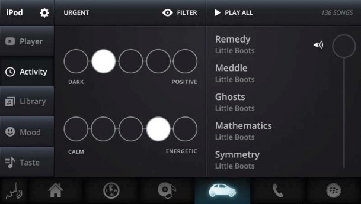
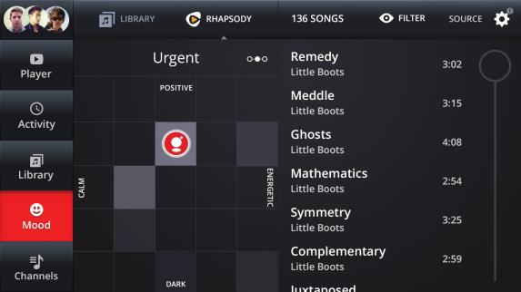
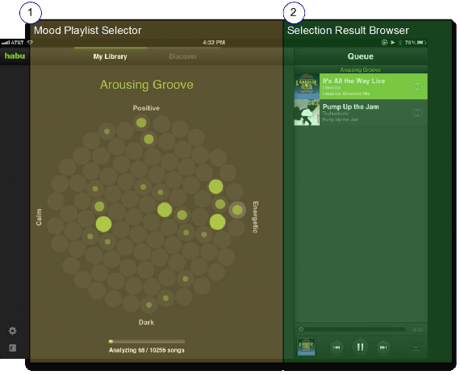

This topic suggests some possible UI designs for mood-based playlists. The designs presented are suggestions only. The MoodTrack-level perceptual descriptor of a piece of music, using emotional terminology that a typical listener might use to describe the audio track; includes hierarchical categories of increasing granularity. See Sonic Attributes. APIs are flexible and can support most any type of UI that can be designed.
Slider Mood Navigation is shown below. Gracenote recommends this design because of its simplicity and ease-of-use in an automotive environment. It can support a touch-screen or scroll-wheel interface for selecting values. This design provides the ability to choose five discrete values on each dimension of Valence and Arousal.

Grid navigation is shown below. It is similar to the slider design. However, mood selection is made across a two-dimensional grid of discrete mood values. With this design, the user can select 25 discrete values as cells on a two-dimensional grid of Valence/Arousal values. This design supports a touch-screen easily, but may be more difficult to map to a scroll-wheel interface. Grid navigation can implement a heat-map design to indicate the relative number of tracks matching each grid. For example, the more tracks there are in a cell, the darker the shade of the cell. In this example, the vertical axis corresponds to Valence values, and the horizontal axis corresponds to Arousal values.

Bubble Magnitude navigation is shown below. This interface differs by using state bubbles to show the user what moods exist in the collection. Bubbles that are filled-in contain tracks for that mood. The size of the bubble indicates the relative number of tracks (the magnitude) in that mood category. This is similar to the heat-map design used in Grid navigation.
The bubbles are placed in a Valence/Arousal grid to provide an intuitive way to select mood playlists. The implementation supports a touch screen easily, but may be more difficult to map to a scroll-wheel interface..
The example below shows Bubble Magnitude navigation for the Level 2 set of 100 moods. This implementation is based on the Gracenote Habu mobile application for the iPad. Automotive applications should provide Level 1 moods (25 bubbles). As in the other implementations, selecting a bubble creates a playlist for the Valence/Arousal value.

Whichever interface design you implement, your application should follow these guidelines when a user selects a mood.
In addition to the UI designs presented above, you can add other components to enhance the mood experience. Examples of these enhancements are: